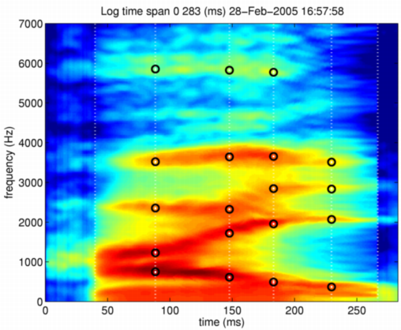
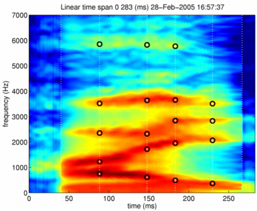

| | Morphing with STRAIGHT parameters and all anchor information | Contents | Index |
Extending the final example by adding frequency alignment yields the morphing procedure presented at ICASSP2003. One important difference in this implementation is more structured code that is (hopefully) easy to understand and to extend. This function is implemented as timeFrequencySTRAIGHTmorphing. The meaning of arguments are the same as the previous section. The following commands perform morphing on logarithmic level morphing with morphing rate 0.5. The commands also display morphed STRAIGHT spectrogram with morphed anchor points and then synthesize the morphed speech sound.
mObjectdmy = timeFrequencySTRAIGHTmorphing(neutralHai,angryHai,0.5,'log'); displayMobject(mObjectdmy,'anchorTimeLocation','Log'); axis([0 283 0 7000]) syneu = executeSTRAIGHTsynthesisM(mObjectdmy);
The following figure shows the morphed STRAIGHT spectrogram and anchor points. Note that the interpolated anchor points are suitably corresponding to characteristic points on morphed STRAIGHT spectrogram. These procedures are functionally equivalent to the morphing procedure presented in the Proceedings of ICASSP2003.

The following figure shows the morphed STRAIGHT spectrogram with linear level interpolation.

This concludes the step-by-step introduction of the morphing procedure presented in our ICASSP2003 paper. This implementation using M-object as the information representation is designed to introduce flexibility and simplicity to our original complicated procedures. (Actually, it was completely rewrote.)
| | Morphing with STRAIGHT parameters and all anchor information | Contents | Index |